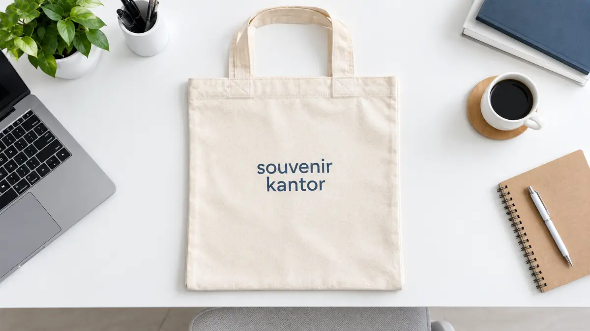

Souvenir Perusahaan Samarinda untuk Kebutuhan Kantor

Souvenir Kantor Jakarta - Souvenir perusahaan Samarinda adalah produk merchandise seperti notebook, pulpen, tumbler, atau tote bag yang diberikan perusahaan kepada karyawan, klien, atau peserta acara. Souvenir ini umumnya dapat dicetak dengan logo perusahaan sebagai bagian dari identitas corporate.
Souvenir perusahaan mencakup kebutuhan harian kantor, rapat bisnis, dan acara seminar. Produk paling umum adalah notebook, pulpen, tumbler, tote bag, dan power bank. Custom logo membuat souvenir sekaligus berfungsi sebagai media branding yang memperkuat kredibilitas perusahaan.
Pemilihan souvenir sebaiknya disesuaikan dengan konteks penggunaan dan jumlah penerima. Perusahaan di Samarinda dapat memesan souvenir dalam skala kecil maupun massal melalui Souvenir Kantor Jakarta dengan jaminan pengerjaan presisi dan pengiriman yang aman ke seluruh wilayah Kalimantan Timur.
- Apa Itu Souvenir Perusahaan dan Apa Fungsinya?
- Mengapa Souvenir Perusahaan Penting bagi Bisnis di Samarinda?
- Bagaimana Cara Memilih Souvenir Perusahaan yang Tepat?
- 1. Konteks Penggunaan
- 2. Jumlah Penerima
- 3. Kesan yang Ingin Ditampilkan
- 4. Kebutuhan Branding
- Apa Saja Jenis Souvenir Perusahaan yang Populer di Samarinda?
- Souvenir Perusahaan untuk Kebutuhan Spesifik
- Apa Kesalahan Umum saat Memilih Souvenir Perusahaan?
- Pesan Souvenir Perusahaan Samarinda
- Kesimpulan
- FAQ Seputar Souvenir Perusahaan Samarinda
Apa Itu Souvenir Perusahaan dan Apa Fungsinya?
Souvenir perusahaan adalah barang yang diberikan atas nama perusahaan untuk mendukung kegiatan internal maupun eksternal, mulai dari operasional kantor sehari-hari sampai acara resmi.
Di lingkungan bisnis, souvenir perusahaan biasanya digunakan untuk tiga kebutuhan utama: perlengkapan kerja karyawan, pelengkap rapat atau pertemuan bisnis, dan kelengkapan acara seperti seminar atau pelatihan. Ketiga konteks ini memiliki karakter produk yang berbeda, meskipun sama-sama berperan sebagai corporate gift.
Selain fungsi praktis, souvenir juga berperan sebagai media pengenalan identitas perusahaan. Saat produk dicetak dengan logo, warna korporat, atau tagline, souvenir tersebut secara tidak langsung memperkuat kesan profesional perusahaan di mata karyawan, klien, maupun peserta acara.
Mengapa Souvenir Perusahaan Penting bagi Bisnis di Samarinda?
Souvenir perusahaan penting karena membantu perusahaan menghadirkan kesan profesional sekaligus mendukung kebutuhan operasional yang berulang, seperti rapat rutin atau kegiatan employee engagement.
Beberapa alasan souvenir perusahaan banyak digunakan oleh perusahaan di Samarinda:
- Mendukung kelengkapan kerja karyawan: Misalnya notebook dan pulpen untuk rapat harian.
- Memberi kesan profesional: Membangun citra positif saat bertemu klien atau mitra bisnis.
- Memperkuat brand recall: Melalui produk fungsional yang digunakan berulang seperti tumbler.
- Bentuk apresiasi: Menjadi bagian dari penghargaan kepada karyawan maupun peserta acara.
- Dokumentasi visual acara: Menjadikan dokumentasi acara perusahaan lebih rapi, selaras, dan konsisten.
Secara umum, kebutuhan souvenir perusahaan akan meningkat menjelang periode rapat tahunan, pelatihan internal, atau seminar yang melibatkan banyak peserta, meskipun jumlah pastinya dapat bervariasi tergantung skala dan agenda masing-masing perusahaan.

Bagaimana Cara Memilih Souvenir Perusahaan yang Tepat?
Cara memilih souvenir perusahaan yang tepat adalah dengan menyesuaikan jenis produk dengan konteks penggunaan, jumlah penerima, anggaran, dan kebutuhan branding perusahaan. Beberapa faktor yang perlu dipertimbangkan:
1. Konteks Penggunaan
Souvenir untuk kantor sehari-hari berbeda kebutuhannya dengan souvenir untuk rapat bisnis maupun seminar berskala besar. Produk yang dipilih sebaiknya relevan dengan situasi pemakaiannya, bukan hanya mengikuti tren umum.
2. Jumlah Penerima
Semakin banyak penerima, semakin penting mempertimbangkan efisiensi produksi dan kepraktisan distribusi, misalnya memilih produk yang ringan dan mudah dikemas dalam jumlah besar seperti pulpen, notebook, atau tote bag.
3. Kesan yang Ingin Ditampilkan
Untuk rapat dengan klien atau direksi, souvenir cenderung dipilih dengan kesan lebih premium seperti gift set eksklusif atau tumbler stainless. Untuk kebutuhan internal harian, produk yang fungsional dan tahan lama biasanya menjadi prioritas utama.
4. Kebutuhan Branding
Jika tujuan utamanya adalah penguatan identitas perusahaan, produk dengan area cetak logo yang jelas seperti notebook, tumbler, atau tote bag umumnya lebih dipilih dibanding produk kecil yang area cetaknya terbatas.
Apa Saja Jenis Souvenir Perusahaan yang Populer di Samarinda?
Jenis souvenir perusahaan yang populer di Samarinda umumnya berupa notebook, pulpen, tumbler, tote bag, power bank, pouch, dan gift set dengan opsi custom logo. Berikut ringkasan kecocokan dan kesan dari masing-masing produk:
| Produk | Kebutuhan yang Cocok | Kesan |
|---|---|---|
| Notebook | Kantor, rapat, seminar | Profesional |
| Pulpen | Kantor, rapat, seminar | Praktis |
| Tumbler | Kantor, rapat | Fungsional |
| Tote bag | Seminar, event | Praktis |
| Power bank | Rapat, seminar | Modern |
| Pouch | Kantor, seminar | Fungsional |
| Gift set | Rapat direksi, klien | Premium |
Pemilihan kombinasi produk biasanya disesuaikan dengan anggaran perusahaan dan tujuan pemberian souvenir, baik untuk pemakaian internal maupun sebagai corporate gift kepada pihak eksternal.
Souvenir Perusahaan untuk Kebutuhan Spesifik
Souvenir perusahaan Samarinda dapat dibedakan berdasarkan kebutuhan penggunaannya, yaitu untuk kelengkapan kantor, pelengkap rapat bisnis, dan kelengkapan acara seminar:
- Untuk kebutuhan operasional kantor dan karyawan, pembahasan lebih lengkap dapat dilihat pada panduan pengadaan perlengkapan kantor.
- Untuk kebutuhan meeting internal maupun pertemuan formal dengan mitra, souvenir difokuskan pada produk eksklusif pendukung rapat.
- Untuk kebutuhan acara seminar dengan peserta dalam jumlah massal, paket seminar kit menjadi solusi paling efisien.
Ketiga kebutuhan ini saling melengkapi dan dapat dikombinasikan sesuai agenda perusahaan sepanjang tahun agar penyediaan merchandise tetap terstruktur.
Apa Kesalahan Umum saat Memilih Souvenir Perusahaan?
Kesalahan umum saat memilih souvenir perusahaan adalah memilih produk tanpa mempertimbangkan konteks acara, memaksakan anggaran yang tidak sesuai jumlah penerima, serta mengabaikan waktu produksi untuk custom logo. Beberapa kesalahan yang sebaiknya dihindari:
- Memilih produk yang kurang relevan dengan acara: Misalnya memilih produk yang terlalu santai atau kasual untuk forum rapat formal dengan jajaran klien penting.
- Tidak memperhitungkan waktu produksi custom logo: Mengakibatkan souvenir belum selesai atau terlambat dikirim saat acara korporat berlangsung.
- Mengabaikan aspek durabilitas dan daya tahan: Terutama untuk souvenir yang diharapkan dipakai jangka panjang seperti tumbler stainless atau tas laptop.
- Kurangnya konsistensi desain logo: Tidak memperhatikan keseragaman warna dan penempatan logo antar produk dalam satu paket merchandise.
Pesan Souvenir Perusahaan Samarinda
Souvenir Kantor Jakarta menyediakan pilihan souvenir corporate untuk kebutuhan kantor, rapat, hingga seminar yang dapat dipesan sesuai kebutuhan perusahaan di Samarinda, termasuk opsi custom logo perusahaan dengan hasil cetak yang rapi dan presisi.
Hubungi Souvenir Kantor Jakarta untuk berkonsultasi mengenai jenis produk, jumlah pesanan, dan estimasi waktu pengerjaan souvenir perusahaan.
Pesan Souvenir Perusahaan Samarinda Berkualitas
Souvenir Kantor Jakarta menyediakan pilihan merchandise corporate custom logo untuk kebutuhan kantor, rapat bisnis, dan seminar perusahaan di Samarinda.
Chat WhatsApp SekarangKesimpulan
Souvenir perusahaan Samarinda dapat disesuaikan dengan tiga kebutuhan utama, yaitu kelengkapan kantor, pelengkap rapat bisnis, dan kelengkapan acara seminar. Pemilihan produk sebaiknya mempertimbangkan konteks penggunaan, jumlah penerima, dan kebutuhan branding agar souvenir yang diberikan relevan dan bermanfaat bagi penerimanya.